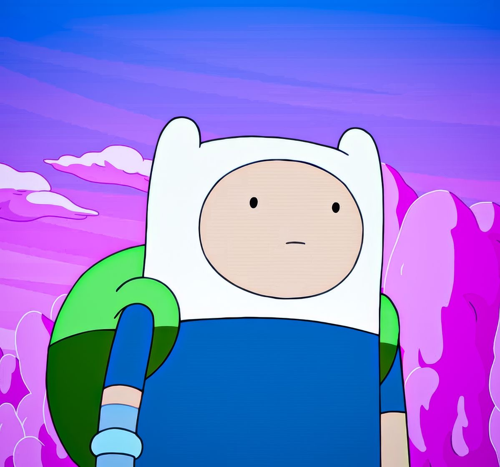
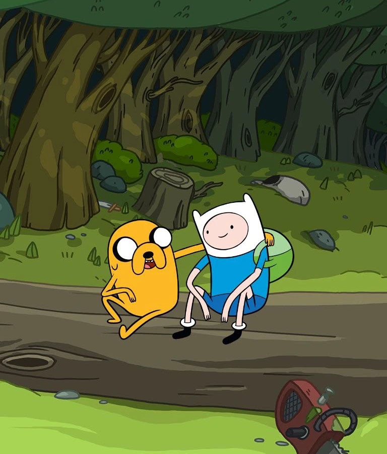
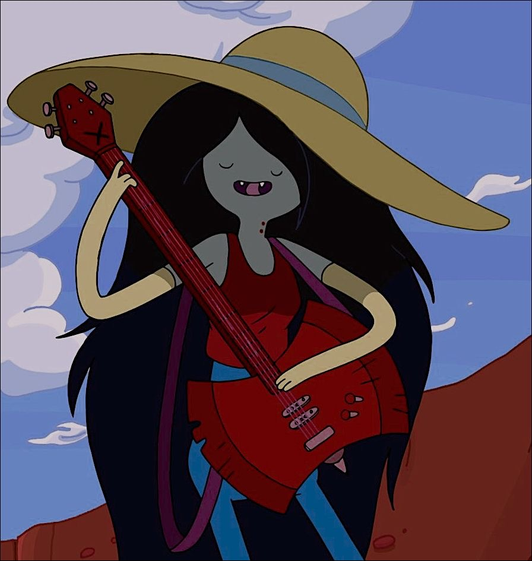
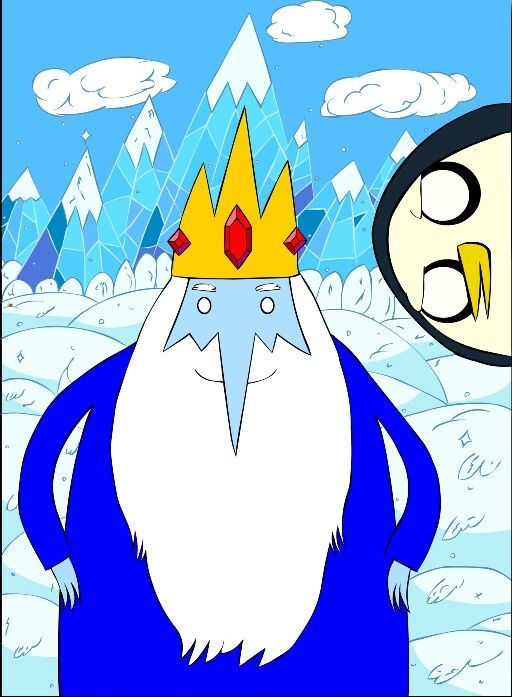
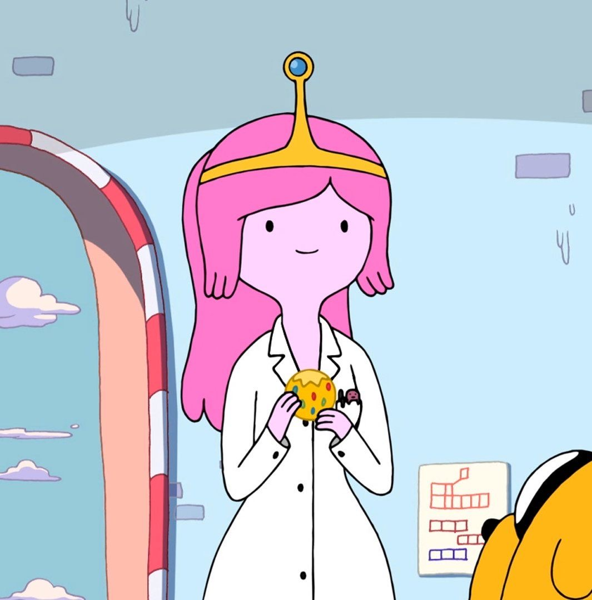

Finn
Entra de cabeça nas aventuras e aprende a mudar de estratégia.
Hora de Aventura · Projeto Individual
Uma visita ao universo de Hora de Aventura para revisitar histórias que me acompanharam enquanto eu crescia e conversar sobre memória, emoções e mudanças.
A animação
Hora de Aventura é uma série animada criada por Pendleton Ward para o Cartoon Network. Ela acompanha Finn, um garoto humano, e Jake, um cachorro que pode esticar e mudar de forma, em aventuras por um mundo de reinos, princesas e criaturas mágicas.
Por trás do humor, a série acompanha o crescimento dos personagens ao longo das temporadas.


O projeto
Uma música, uma amizade ou uma cena que ganha outro sentido quando a gente cresce. Revisito momentos da série e uso essas histórias para levantar perguntas sobre o que sentimos e lembramos.
Minha história
Comecei a assistir a Hora de Aventura no Cartoon Network. Era diversão.
A série virou também uma fonte de conforto.
Ao voltar a esses episódios, percebo detalhes que me fazem pensar nas minhas experiências pessoais relacionadas a mudanças e relacionamentos.
Personagens
Seis personagens que também aparecem nas cartas do jogo da memória.

Entra de cabeça nas aventuras e aprende a mudar de estratégia.

Companheiro de Finn, capaz de mudar de forma e de ritmo.

Usa a música para expressar o que ficou guardado.

Transforma situações do dia a dia em histórias e brincadeiras.

Sua história com Marceline abre uma conversa sobre lembranças e vínculos.

Cientista e governante do Reino Doce, resolve problemas inventando soluções.
Minijogos
Dois jogos rápidos. São demonstrações locais: os resultados ainda não são salvos e não são testes científicos de memória.
Vire duas cartas de cada vez e encontre os seis pares de personagens. O tabuleiro fica nesta página.
Jogar memória
Observe a ordem em que Finn, Jake, Marceline e BMO se acendem e repita a sequência em seis rodadas.
Jogar Sequência de Hora de AventuraMinijogo
Vire duas cartas de cada vez e encontre os seis pares de personagens. Repare em como você se lembra da posição das cartas à medida que joga.
Ao encontrar todos os pares, você recebe uma mensagem de um episódio. O resultado vai para o painel do site. Não é um teste científico de memória.
Tempo: 0:00